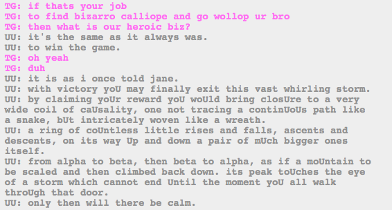

I gather that this is big. I mean, it’s basically been said before, but Calliope is putting everything together. So, the troll universes were supposed to lead to the human universes, and only then can they really create a new universe…and I am hoping “all walk through the door” means the trolls and the humans. And it sounds like somehow making this universe will keep them safe from Lord English…somehow. And probably whatever bigger force is involved.